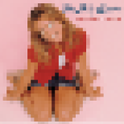

Bogchat - Welcome 2 my page!

ReelinNautical's profile
Favorite Album:
On the early light, I cast my line Out on the water, feeling just fine Been fishing these waters for years on end Every catch, every tale, my heart will mend The waves they roll, the seagulls cry I'm just a man with a love for the tide The thrill of the chase, the tug on the line Keeps me coming back time after time.
#freebritney
Go Back
Bogchat